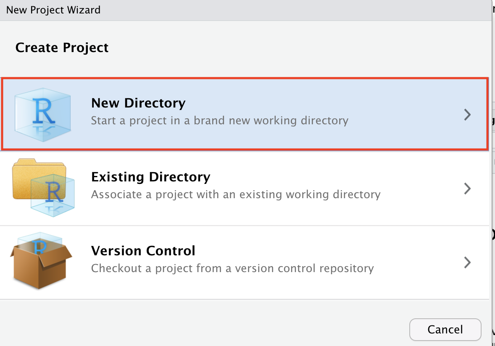
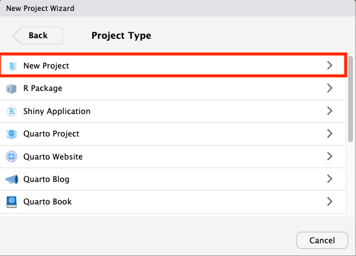
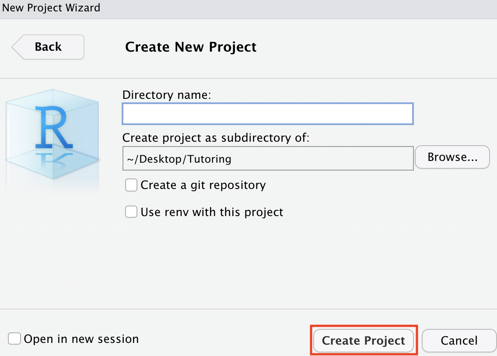

In this topic, you will learn about the project structure and how to manage your project in R properly.
Paths
The paths are used to identify the location of a file, computer, device, or web page. You could think of it as a direction pointing to the destination.
File path
There are two main ways of defining the paths to a file: absolute and relative.
Absolute Paths
It is a full location of the file or directory specified, starting from the home directory.
What does it look like?
The path may look different depending on the system you are using. If we want to locate a penguin’s data inside the folder called learnR, this is what it may look like.
Windows:
C:\Desktop\learnR\data\penguins.csv
MacOS & Linux:
/Users/Desktop/learnR/data/penguins.csv
Use of absolute path
Absolute paths should never be used in projects, as others will not be able to run the code you provide. This is because absolute paths to a project vary with operating systems and where the project is stored.
As we can see, MacOS and Windows have completely different path structures.
Relative Paths
It is the location of a file or directory specified relative to your current working directory.
Working directory
The working directory is the default location R is looking at when loading the file or where it will store the files. If you want to check where your current working directory is, you can run the getwd() function. To understand a bit more about the current working directory, let me introduce the here package.
here package
It enables easy file referencing in project-oriented workflows. The here() function helps you build a path to your specified files. For example, if you want to access panguins data in your project folder instead of read_csv("Users/Desktop/learnR/data/penguins.csv"), you can just read_csv(here::here("data/penguins")). It only works because your current working directory is in the learnR folder through the here() function.
Let’s say you are trying to get to the Campus center. An absolute path would direct you absolutely, starting from Earth, Australia, Melbourne, Monash Clayton, and then Campus Center. However, the relative path to Monash Clayton is the path from the Monash Clayton Campus to the Campus Center.
You should always use the relative path when working on a project. It allows anyone who has your project to run the code without changing file paths, as it is unlikely that all the users will have the same absolute path.
Webpage
So far, we only see how to reference files on our computers. However, we can also reference places on other computers, for example, when we want to get data from the internet.
To locate the webpage, we use the URL (Uniform Resource Locator) to identify any resource on the internet.
https://learnr.numbat.space/data/penguins.csv
Files organisation
There are many ways you can organise your files. The one principle you should follow is to make sure all the files you used in your analysis are stored within one project folder.
The folder names you use are a personal choice, and there is no best approach. A project’s folders should organise the files and have names that adequately describe its contents. Often, a project contains many files with different purposes, including scripts, data, reports, documents, and other outputs.
Some common folder names you might like to use in the analysis projects.
Data is commonly stored in the ‘data’ folder, like we created in the slides. If you work with lots of data of different types, you could also use more folders inside your ‘data’ folder. For example, if the data you are working with needs pre-processing and cleaning, you could have ‘data/original’ and ‘data/cleaned’ folders to further organise the data files.
Scripts are commonly stored in folders of many different names. For R projects, an ‘R’ folder is commonly used (from the structure of an R package). Many data analysis projects use a ‘scripts’ folder, and more language-agnostic projects might use a ‘src’ or ‘code’ folder. Your codes are often split across several scripts that perform different tasks, such as cleaning data, producing plots, and generating reports.
Outputs can be stored in many different folders, which describe the type of output. For example, you may use a ‘results’ folder for analysis results, a ‘plots’ folder for plots, and a ‘reports’ folder for reports.
learnR
├── data
| └── penguins.csv
|
├── R
| ├── cleaning.R
| └── analysis.R
|
└── plots
└── linear.png
Path
Remember, all paths should be relative to the project folder. For example, ./data/penguins.csv.
R project
An R project will allow RStudio to set the working directory correctly, handling all of the relative paths to the project folder for us. It encourages you to organise the file structure properly by putting all the files used by that project inside the same folder.
It also allows quick switching between projects within the RStudio, tabs restoring from the last use when opening the project, and effortless collaboration.
New R project
To create a new project, click the project selector in the top-right corner. Then click on the “New Project…”.
It will show you three options.
If you want to start a new R project in a new location on your computer, select “New Directory”.
If you want to start a new R project in a location where all the files already exist, select “Existing Directory”.
If you want to start a new R project by cloning a version control (Git or Subversion) repository, select “Version Control”.
For your very first R project, let’s start by selecting “New Directory”.

There are many different types of R projects that you can create. For a data analysis project, we would select “New Project” for an empty folder.

Give your project (and the folder containing it) a name using the “Directory name:” field. You can also choose where the project will exist on your computer by clicking on the “Browse…” button. If you do not choose, it will be in your home directory. You can leave the rest unticked for now.
Click “Create Project”.

You should be able to see the project file with .Rproj extension inside the project directory. You have now successfully created the R project. Clicking on the .Rproj file will open the project directly in RStudio.
Self contained
Projects should be self-contained, meaning all files and data should exist inside the project directory. It makes sharing the work easy since all the files required to reproduce the analysis are relative to the project folder.
Do not save the workspace image
When closing RStudo, you might be greeted with this pop-up asking you to save workspace images. You should select “Don’t Save”.
Save the workspace means storing all of the objects you’ve created for the next time you open the project. It may sound tempting to do it, but it is bad for reproducibility. We should use code to reproduce the objects in the R environment and save them inside the project directory.
You can prevent the popup messages by going to the “Global Options” and inside “General”, changing “Save workspace to .RData on exit” to “Never”.